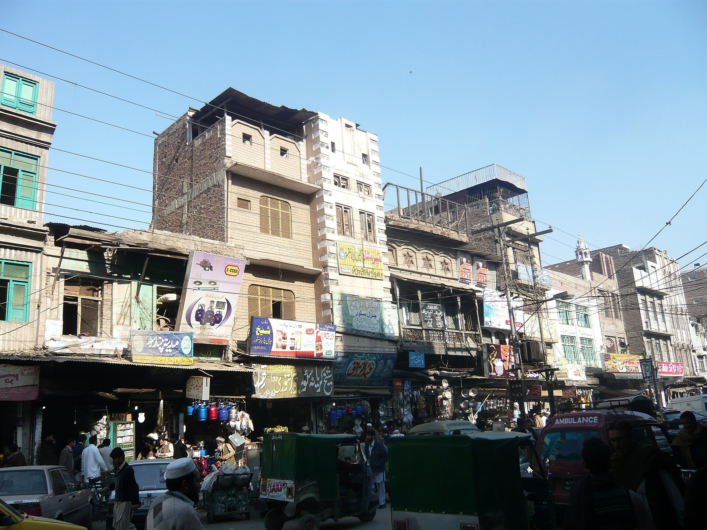

Oʻzbek diasporasi Pokistonda: Turkiston muhojirlarining shakllanishi
Pokistondagi oʻzbek jamoasi ikki yirik tarixiy toʻlqin natijasida shakllangan: 1920–30-yillarda sovet repressiyasi va basmachilik harakatining magʻlubiyatidan soʻng Afgʻonistonga qochgan turkistonliklar, hamda 1979-yildagi sovet-afgʻon urushidan keyin Afgʻonistondan Pokistonga oʻtgan afgʻon oʻzbeklari. Quyida bu jamoaning shakllanishi tarixi faqat tekshirilgan manbalar asosida bayon etiladi.

Bugungi Pokistonda qariyb bir million oʻzbek yashaydi. Bu jamoa bir necha avlod davomida, asosan ikki yirik tarixiy toʻlqin natijasida shakllangan. Quyida oʻzbek (va kengroq — turkiston) muhojirlarining Pokistonda qanday paydo boʻlgani va qayerlarda joylashgani faqat tekshirilgan manbalar asosida bayon etiladi.
Tarixiy ildizlar
Oʻzbeklarning hozirgi Pokiston hududi bilan aloqasi uzoq tarixga ega. Manbalarga koʻra, oʻzbeklar Paxli (hozirgi Hazara, Xaybar-Paxtunxva) hududini 1472-yildan 1703-yilgacha, yaʼni ikki yuz yildan ortiq boshqargan. Biroq hozirgi oʻzbek diasporasining asosiy qismi bu qadimgi davr emas, balki XX asrdagi muhojirlik toʻlqinlari bilan bogʻliq.
Birinchi toʻlqin: basmachilik va sovet repressiyasi
1920–30-yillarda Oʻrta Osiyoda sovet hokimiyatiga qarshi basmachilik harakati magʻlubiyatga uchragach va sovet repressiyalari kuchaygach, minglab oʻzbeklar va boshqa turkistonliklar qoʻshni Afgʻonistonga qochib oʻtdi. Bu — Turkiston muhojirligining birinchi yirik toʻlqini boʻlib, muhojirlarning bir qismi keyinchalik Afgʻonistondan boshqa mamlakatlarga, jumladan hozirgi Pokiston hududiga tarqaldi.
Ikkinchi toʻlqin: sovet-afgʻon urushi
Ikkinchi yirik toʻlqin 1979-yilda Sovet Ittifoqining Afgʻonistonga bostirib kirishi va undan keyingi urush bilan bogʻliq. Urush afgʻon oʻzbeklarini (shimoliy Afgʻonistonda yashovchi oʻzbek aholisini) ommaviy ravishda qochqinlikka majbur qildi; koʻplari qoʻshni Pokistonga oʻtdi. Minority Rights Group maʼlumotiga koʻra, Afgʻonistondagi oʻzbeklar va turkmanlar aynan 1920–30-yillardagi basmachilik qatnashchilari avlodlari bilan ham bogʻliq.
Qayerda yashaydilar
Hozirgi kunda Pokistonda taxminan bir million oʻzbek yashaydi. Ular asosan mamlakatning shimoli-gʻarbida — Xaybar-Paxtunxva (ayniqsa Peshovar), shuningdek Belujiston, Panjob, Gilgit-Baltiston va Karachi shaharlarida toʻplangan. Baʼzi maʼlumotlarga koʻra, Karachi yaqinida oʻzbek va tojik qochqinlari uchun yuzlab qishloqlar tashkil etilgan edi.
Turkiyaga keyingi hijrat
Pokistondagi afgʻon oʻzbek qochqinlarining bir qismi keyinchalik boshqa yurtga koʻchdi. 1981-yilda bir qancha afgʻon oʻzbek qochqinlari Pokistondan Turkiyaga oʻtib, u yerdagi mavjud jamoalarga — Kayseri, Izmir, Anqara va Istanbulning Zeytinburnu mahallasidagi turkistonlik jamoalariga qoʻshildi.
Til va madaniyat
Pokistondagi oʻzbeklar odatda bir necha tilda soʻzlashadi: ona tili oʻzbekcha bilan birga dariy, pashtu hamda mamlakatning rasmiy tillari — urdu va inglizchada. Jamoa oʻz ona tili va anʼanalarini saqlab qolishga intilsa-da, avlodlar almashuvi va mahalliy muhit taʼsirida madaniy moslashuv ham kuzatiladi.